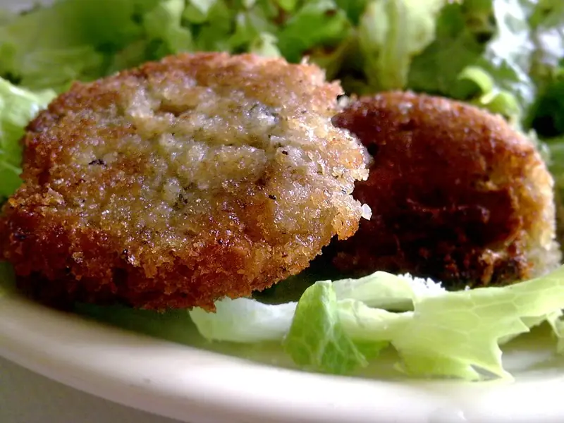

Фото: Lablascovegmenu from London, CC BY 2.0
.jpg){kind=link}
Оладьи из вчерашнего риса
Мягкие сладковатые оладьи из оставшегося отварного риса
25 мин3 порц.380 ккал на порциюБ 10 · Ж 15 · У 50Русская кухня
Продукты на 3 порц.
- Рис варёный (остался)300 г
- Яйцо куриное2 шт
- Мука пшеничная2 ст. л.
- Молоко3 ст. л.
- Сахар1 ст. л.
- Разрыхлитель0,5 ч. л.
- Соль1 щеп.
- Растительное масло2 ст. л.
- Сметана 20% по желанию60 г
Как готовить
- Рис разомните вилкой или пробейте блендером несколько секунд, чтобы часть зёрен раскрошилась.
- Добавьте яйца, молоко, сахар и соль, перемешайте.
- Всыпьте муку с разрыхлителем и замешайте тесто густоты сметаны.
- Разогрейте масло на сковороде на среднем огне. Выкладывайте тесто столовой ложкой и чуть разравнивайте.
- Жарьте по 2-3 минуты с каждой стороны до золотистого цвета. Подавайте со сметаной, вареньем или мёдом.
Совет. Для несладкой версии уберите сахар, добавьте тёртый сыр и зелёный лук. Огонь не делайте сильным: рисовые оладьи пропекаются дольше обычных.